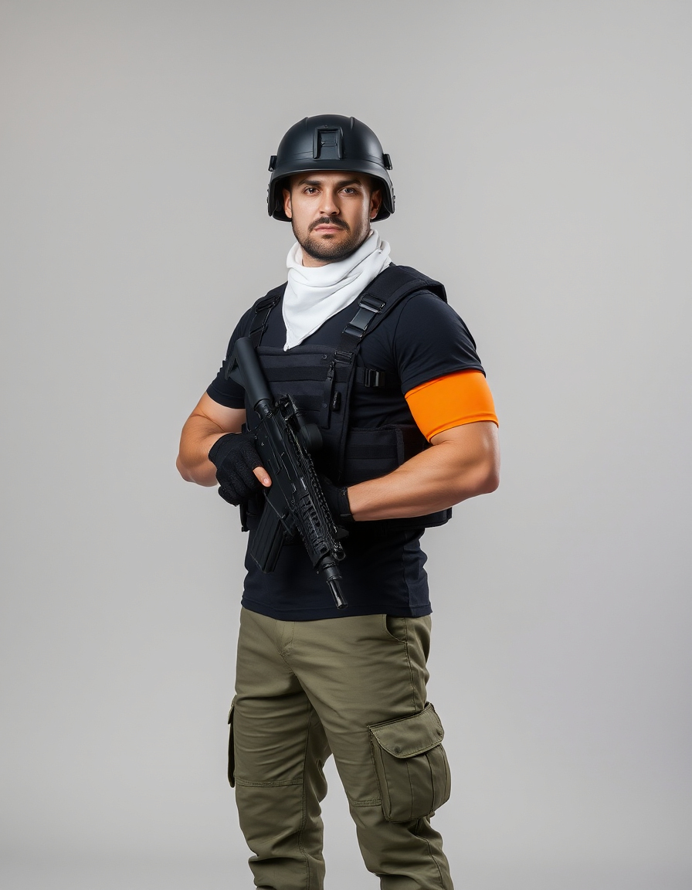
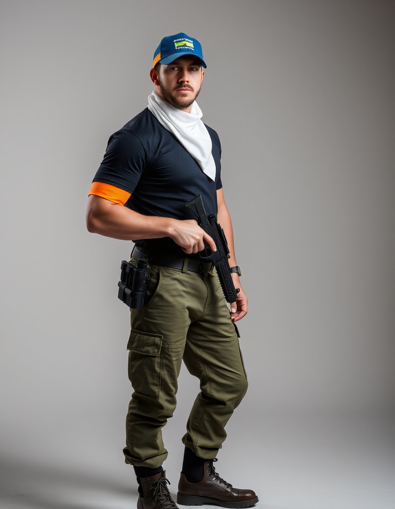

קוד לבוש - כיתת כוננות - בית יצחק שער חפר
מפרט כללי
- 🧥 חולצת כיתת כוננות שחורה
- 👖 מכנס ב' צה"לי
- 🥾 נעליים סגורות
- 🟧 רצועת סימון כתומה על זרוע שמאל
- 🧢 כובע בטחון כחול עם סרט סימון זוהר
- 🤍 בנדנה לבנה מסביב לצוואר
- 🗡 נשק ארוך ו\או קצר
⚠️ לוחם החמוש בנשק ארוך ילבש בנוסף אפוד קרמי שחור וקסדה

